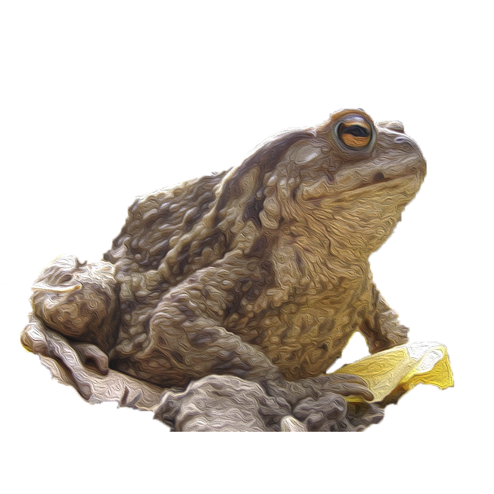
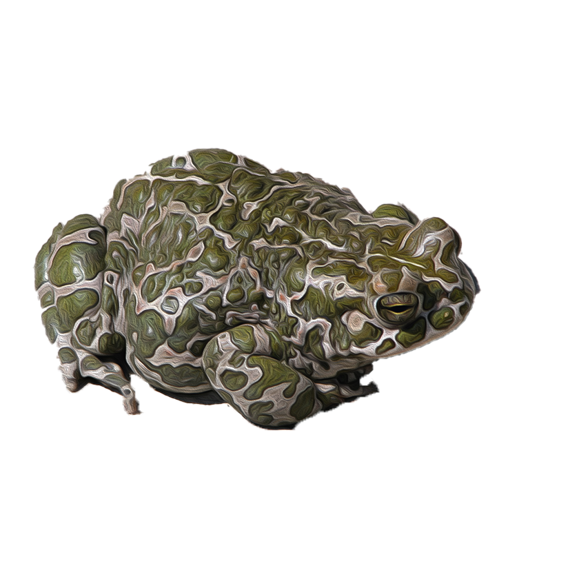

Ропуха звичайна (сіра)
Зазвичай полює по ночах, і є найактивнішою у вологих погодних умовах. Вдень активна у дощову та похмуру погоду. В інакшому випадку денними сховищами сірих ропух служать порожнини під коренями та стовбурами повалених дерев, пеньки, каміння, купи хмизу, листова підстилка. На зимівлю йдуть у вересні-листопаді. Зимують поодинці або невеликими групами у непромерзаючих сховищах — норах гризунів, трухлявих деревах, порожнинах ґрунту, купах каміння, іноді в льохах.
При дослідженні особливостей біології цього виду в Швеції зроблено припущення, що у зв'язку з тим, що в районі спостережень ґрунт протягом зимового періоду промерзає на глибину 1-2 м, сірі ропухи зимують тут, найвірогідніше, у воді (Ericsson et al., 1982). Ця особливість підтверджується спостереженнями у центральній Україні.
Для захисту від хижаків виділяє токсичну речовину — буфагін. Цього достатньо, щоб утримати багатьох хижаків на відстані, хоча деякі види змій і їжаки виробили проти цієї отрути імунітет.
Зустрічається спорадично. Проте відмічена у всіх чотирьох фізико-географічних р-нах Західного Поділля. Здебільшого вид зазначений в лісових біоценозах, а також тісно пов’язаний з населеними пунктами, заселяє присадибні ділянки.
Найбільшої щільності (до 11 ос./100 м берегової лінії) досягає в період розмноження. Така кількість ропухи зареєстрована у водоймах околиць с. Трибухівці Бучацького р-ну та с. Оринин Кам’янець-Подільського р-ну. Щільність поселень виду – 5,1 ос./100 м


Ропуха зелена
Довжина тіла зеленої ропухи становить звичайно 50-80 мм (рідше — до 140 мм), забарвлення дуже мінливе, та найчастіше верх тіла оливково-зелених тонів з округлими темно-зеленими плямами, виявленість та розміри яких часто змінюються залежно від статі (в самиць плями зазвичай більші та контрастніші) та географічного поширення (самці південних популяцій у східній частині ареалу характеризуються меншою плямистістю, аж до її повної відсутності). Характер розташування плям та їхня конфігурація протягом усього життя не змінюються.
Черевний бік однотонного білувато-сірого кольору з більш або менш виявленими дрібними плямами часто неправильної форми. На спинному боці є бородавки, ступінь виявленості та шпичастість яких збільшується у популяціях в південно-східному напрямку, що є характернішим для самців. По боках тулуба є подекуди дрібні бородавки червонуватих відтінків. На передпліччі та гомілці зазвичай по 3 поперечні плями-смуги. На внутрішньому боці передплесни розвинена шкіряна складка, найдовший палець задньої кінцівки, як правило, має поодинокі зчленувальні горбочки, пальці задніх кінцівок характеризуються розвитком плавальних перетинок різного ступеня прояву.
Зіниця горизонтальна, барабанна перетинка є, позад очей розташовані округлі залози-паротиди. Статевий диморфізм, крім особливостей забарвлення та бородавчатості, виявлений у дрібніших розмірах самців, наявності в них внутрішнього непарного горлового резонатора та розвитку шлюбних мозолів на перших двох пальцях передніх кінцівок.
У регіоні дослідження вид зустрічається нерівномірно по всій території. Можна виділити кілька центрів концентрації виду: у Львівській обл. – масив Вороняки (околиці сіл Підлипці, Підкамінь та Вороняки), де щільність виду складає 5–9 ос./100 м берегової лінії; у Західно-Подільському Придністров’ї центрами підвищеної чисельності виду є Бучацький, Борщівський та
Кам’янець-Подільський р-ни, де чисельність становить 5–7 ос./100 м; у заповіднику “Медобори” (села Красне і Крутилів Гусятинського р-ну) щільність досягає 4–6 ос./100 м берегової лінії. Найнижчою є щільність поселень у Теребовлянському р-ні – 0,9–4,5 ос./100 м.
